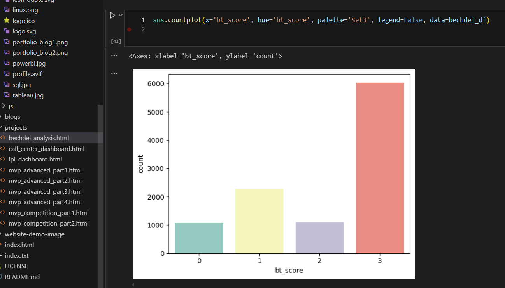

Bechdel Test Analysis
To analyze gender representation in films through the lens of the Bechdel Test, and correlate test outcomes with key commercial and critical metrics such as revenue, genre, and IMDb ratings. The analysis focuses on films released between 1900 and 2015.

Bar chart showing counts of each score (0 to 3)
Project Overview
- The Bechdel Test is a simple but powerful tool used to assess the representation of women in films. A movie passes the test if it meets three criteria:
- It has at least two named women characters,
- who talk to each other,
- about something other than a man.
- This project explores how films released between 1900 and 2015 perform on the Bechdel Test and investigates whether gender representation has any relationship with movie success factors such as revenue, budget, genre, vote count, and ratings.
Data Sources & Justification
- For this analysis, I opted for a smaller, well-structured movie dataset rather than the full IMDb datasets. While IMDb offers comprehensive coverage, its large size and highly normalized format require extensive preprocessing and significant computing resources.
- The alternative dataset provided the necessary attributes—such as title, year, genre, runtime, and ratings—without the overhead. This allowed for a more efficient workflow and seamless integration with Bechdel Test data to focus on meaningful insights.
- While the dataset only includes movies up to 2015, it was sufficient for deriving meaningful insights on gender representation in film.
Tools & Libraries
Languages: Python
Libraries: pandas, seaborn, matplotlib, plotly, plotnine, cufflinks
Environment: Jupyter Notebook
Data Sources
Bechdel Test API- Endpoint: https://bechdeltest.com/api/v1/getAllMovies
- Provides metadata and Bechdel Test scores (0–3) for thousands of movies.
- A structured dataset containing movies up to 2015.
- Includes: imdb_id, budget, revenue, director, genres, vote_count, vote_average, release_year, etc.
Data Preparation
Bechdel Dataset:- Loaded from API using pandas.read_json().
- Renamed rating column to bt_score
- Removed leading/trailing spaces from title.
- Dropped movies released before 1900 (only 1 valid entry before 1900).
- Reordered columns and reset index.
- Created pass_test column: 1 if bt_score == 3, else 0.
- Dropped irrelevant columns: keywords, runtime, cast, tagline, etc.
- Split pipe-separated genres into lists.
- Removed nulls and duplicates based on imdb_id.
- Saved as Cleaned_movies.csv.
Merging Datasets
Visualizations & Insights
- Bechdel Score Distribution
- Bar chart showing counts of each score (0 to 3).
- Pass/Fail Rate
- Count of movies that passed vs. failed the Bechdel Test.
- Movie Production Trends
- Scatter plot of movie counts per year (1900–2015).
- Line chart showing counts by Bechdel Score across years.
- Genre-Based Analysis
- Exploded Genres list for granular analysis.
- Calculated pass rate per genre.
- Interactive bubble chart:
- X-axis: Bechdel Pass Rate
- Y-axis: Average Revenue
- Bubble Size: Average Votes
- Color: Genre
- Profitability vs. Gender Representation
- iltered for non-zero budget and revenue..
- Calculated Profit_percentage.
- Box plot comparing profitability between passing vs. failing movies.
Key Deliverables
- Certain genres (e.g., Comedy, Drama, Romance) tend to have higher Bechdel pass rates.
- Movies that pass the Bechdel Test do not necessarily have higher revenue, but they show comparable or sometimes better profitability.
- There’s been a noticeable rise in the number of Bechdel-passing movies post-2000, indicating growing attention to gender representation.
File Structure
Cleaned_movies.csv:IMDb subset with relevant movie metadatabechdel_analysis.ipynb:IMDb subset with relevant movie metadata
Next Steps / Ideas
- Incorporate modern data from post-2015 IMDb datasets.
- Sentiment analysis of plot descriptions (if available).
- Director-level trends in passing rates.